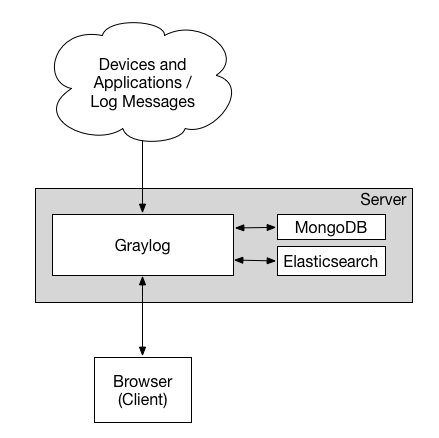

服务日志收集方案：Filebeat + Graylog！
当我们公司内部部署很多服务以及测试、正式环境的时候，查看日志就变成了一个非常刚需的需求了。是多个环境的日志统一收集，然后使用 Nginx 对外提供服务，还是使用专用的日志收集服务 ELK 呢？这就变成了一个问题！而 Graylog 作为整合方案，使用 elasticsearch 来存储，使用 mongodb 来缓存，并且还有带流量控制的 (throttling)，同时其界面查询简单易用且易于扩展。所以，使用 Graylog 成为了不二之选，为我们省了不少心。

1. Filebeat 工具介绍
服务日志收集方案：Filebeat + Graylog！
- [1] Filebeat - 日志文件托运服务
Filebeat 是一个日志文件托运工具，在你的服务器上安装客户端后，filebeat 会自动监控给定的日志目录或者指定的日志文件，追踪读取这些文件，不停的读取，并且转发这些信息到 elasticsearch 或者 logstarsh 或者 graylog 中存放。
- [2] Filebeat - 工作流程介绍
当你安装并启用 filebeat 程序的时候，它会启动一个或多个探测器(prospectors)去检测你指定的日志目录或文件，对于探测器找出的每一个日志文件，filebeat 都会启动一个收割进程(harvester)，每一个收割进程读取一个日志文件的最新内容，并发送这些新的日志数据到处理程序(spooler)，处理程序会集合这些事件，最后 filebeat 会发送集合的数据到你指定的地址上去(我们这里就是发送给graylog服务了)。
- [3] Filebeat - 图示理解记忆
我们这里不适用 logstash 服务，主要是因为 filebeat 相比于 logstash 更加轻量级。当我们需要收集信息的机器配置或资源并不是特别多时，且并没有那么复杂的时候，还是建议使用 filebeat 来收集日志。日常使用中，filebeat 的安装部署方式多样且运行十分稳定。

2. Filebeat 配置文件
配置 Filebeat 工具的核心就是如何编写其对应的配置文件！
对应 Filebeat 工具的配置主要是通过编写其配置文件来控制的，对于通过 rpm 或者 deb 包来安装的情况，配置文件默认会存储在，/etc/filebeat/filebeat.yml 这个路径下面。而对于，对于 MAC 或者 Win 系统来说，请查看解压文件中相关文件，其中都有涉及。
下面展示了 Filebeat 工具的主配置文件，注释信息中都对其各个字段含义进行了详细的解释，我这里就不再赘述了。需要注意的是，我们将日志的输入来源统统定义去读取 inputs.d 目录下的所有 yml 配置。所以，我们可以更加不用的服务(测试、正式服务)来定义不同的配置文件，根据物理机部署的实际情况具体配置。
# 配置输入来源的日志信息
# 我们合理将其配置到了inputs.d目录下的所有yml文件
filebeat.config.inputs:
enabled: true
path: ${path.config}/inputs.d/*.yml
# 若收取日志格式为json的log请开启此配置
# json.keys_under_root: true
# 配置filebeat需要加载的模块
filebeat.config.modules:
path: ${path.config}/modules.d/*.yml
reload.enabled: false
setup.template.settings:
index.number_of_shards: 1
# 配置将日志信息发送那个地址上面
output.logstash:
hosts: ["11.22.33.44:5500"]
# output.file:
# enable: true
processors:
- add_host_metadata: ~
- rename:
fields:
- from: "log"
to: "message"
- add_fields:
target: ""
fields:
# 加token是为了防止无认证的服务上Graylog服务发送数据
token: "0uxxxxaM-1111-2222-3333-VQZJxxxxxwgX "
下面展示一个简单的 inputs.d 目录下面的 yml 配置文件的具体内容，其主要作用就是配置单独服务的独立日志数据，以及追加不同的数据 tag 类型。
# 收集的数据类型
- type: log
enabled: true
# 日志文件的路径地址
paths:
- /var/log/supervisor/app_escape_worker-stderr.log
- /var/log/supervisor/app_escape_prod-stderr.log
symlinks: true
# 包含的关键字信息
include_lines: ["WARNING", "ERROR"]
# 打上数据标签
tags: ["app", "escape", "test"]
# 防止程序堆栈信息被分行识别
multiline.pattern: '^\[?[0-9]...{3}'
multiline.negate: true
multiline.match: after
# 需要配置多个日志时可加多个type字段
- type: log
enabled: true
......
需要注意的是，针对于不同的日志类型，filebeat 还提供了不同了模块来配置不同的服务日志以及其不同的模块特性，比如我们常见的 PostgreSQl、Redis、Iptables 等。
# iptables
- module: iptables
log:
enabled: true
var.paths: ["/var/log/iptables.log"]
var.input: "file"
# postgres
- module: postgresql
log:
enabled: true
var.paths: ["/path/to/log/postgres/*.log*"]
# nginx
- module: nginx
access:
enabled: true
var.paths: ["/path/to/log/nginx/access.log*"]
error:
enabled: true
var.paths: ["/path/to/log/nginx/error.log*"]
3. Graylog 服务介绍
服务日志收集方案：Filebeat + Graylog！
- [1] Graylog - 日志监控系统
Graylog 是一个开源的日志聚合、分析、审计、展现和预警工具。在功能上来说，和 ELK 类似，但又比 ELK 要简单很多。依靠着更加简洁，高效，部署使用简单的优势很快受到许多人的青睐。当然，在扩展性上面确实没有比 ELK 好，但是其有商业版本可以选择。
- [2] Graylog - 工作流程介绍
部署 graylog 最简单的架构就是单机部署，复杂的也是部署集群模式，架构图示如下所示。我们可以看到其中包含了三个组件，分别是 Elasticsearch、MongoDb 和 Graylog。其中，Elasticsearch 用来持久化存储和检索日志文件数据(IO 密集)，MongoDb 用来存储关于 Graylog 的相关配置，而 Graylog 来提供 Web 界面和对外接口的(CPU 密集)。


4. Graylog 组件功能
配置 Graylog 服务的核心就是理解对应组件的功能以及其运作方式！
简单来讲，Input 表示日志数据的来源，对不同来源的日志可以通过 Extractors 来进行日志的字段转换，比如将 Nginx 的状态码变成对应的英文表述等。然后，通过不同的标签类型分组成不用的 Stream，并将这些日志数据存储到指定的 Index 库中进行持久化保存。
| 编号 | 组件名称 | 功能介绍 | 主要特点 |
|---|---|---|---|
| 1 | Dashboards |
数据面板固定展示 | 主要是用来保存特定搜索条件的数据面板 |
| 2 | Searching |
日志信息条件搜索 | 关键字搜索、时间搜索、搜索保存、创建面板、分组查询、结果导出、查询高亮显示、自定义时间 |
| 3 | Alert |
设置告警提示方式 | 支持邮件告警、HTTP 回调和自定义脚本触发 |
| 4 | Inputs |
日志数据抓取接收 | 部署 Sidercar 主动抓取或使用其他服务被动上报 |
| 5 | Extractors |
日志数据格式转换 | json 解析、kv 解析、时间戳解析、正则解析 |
| 6 | Streams |
日志信息分类分组 | 设置日志分类条件并发送到不同的索引文件中去 |
| 7 | Indices |
持久化数据存储 | 设置数据存储性能 |
| 8 | Outputs |
日志数据的转发 | 解析的 Stream 发送到其他 Graylog 集群或服务 |
| 9 | Pipelines |
日志数据的过滤 | 建立数据清洗的过滤规则、字段添加删除、条件过滤、自定义函数等 |
| 10 | Sidecar |
轻量级的日志采集器 | 相当于 C/S 模式；大规模时使用 |
| 11 | Lookup Tables |
服务解析 | 基于 IP 的 Whois 查询和基于来源 IP 的情报监控 |
| 12 | Geolocation |
可视化地理位置 | 实现基于来源 IP 的情报监控 |
Graylog 通过 Input 搜集日志，每个 Input 单独配置 Extractors 用来做字段转换。Graylog 中日志搜索的基本单位是 Stream，每个 Stream 可以有自己单独的 Elastic Index Set，也可以共享一个 Index Set。
Extractor 在 System/Input 中配置。Graylog 中很方便的一点就是可以加载一条日志，然后基于这个实际的例子进行配置并能直接看到结果。内置的 Extractor 基本可以完成各种字段提取和转换的任务，但是也有些限制，在应用里写日志的时候就需要考虑到这些限制。Input 可以配置多个 Extractors，按照顺序依次执行。
系统会有一个默认的 Stream，所有日志默认都会保存到这个 Stream 中，除非匹配了某个 Stream，并且这个 Stream 里配置了不保存日志到默认 Stream。可以通过菜单 Streams 创建更多的 Stream，新创建的 Stream 是暂停状态，需要在配置完成后手动启动。Stream 通过配置条件匹配日志，满足条件的日志添加 stream ID 标识字段并保存到对应的 Elastic Index Set 中。
Index Set 通过菜单 System/Indices 创建。日志存储的性能，可靠性和过期策略都通过 Index Set 来配置。性能和可靠性就是配置 Elastic Index 的一些参数，主要参数包括，Shards 和 Replicas。
除了上面提到的日志处理流程，Graylog 还提供了 Pipeline 脚本实现更灵活的日志处理方案。这里不详细阐述，只介绍如果使用 Pipelines 来过滤不需要的日志。下面是丢弃 level > 6 的所有日志的 Pipeline Rule 的例子。从数据采集(input)，字段解析(extractor)，分流到 stream，再到 pipeline 的清洗，一气呵成，无需在通过其他方式进行二次加工。
Sidecar 是一个轻量级的日志采集器，通过访问 graylog 进行集中式管理，支持 linux 和 windows 系统。Sidecar 守护进程会定期访问 graylog 的 REST API 接口获取 Sidecar 配置文件中定义的标签(tag) ，Sidecar 在首次运行时会从 graylog 服务器拉取配置文件中指定标签(tag) 的配置信息同步到本地。目前 Sidecar 支持 NXLog，Filebeat 和 Winlogbeat。他们都通过 graylog 中的 web 界面进行统一配置，支持 Beats、CEF、Gelf、Json API、NetFlow 等输出类型。Graylog 最厉害的在于可以在配置文件中指定 Sidecar 把日志发送到哪个 graylog 群集，并对 graylog 群集中的多个 input 进行负载均衡，这样在遇到日志量非常庞大的时候，graylog 也能应付自如。
rule "discard debug messages"
when
to_long($message.level) > 6
then
drop_message();
end
日志集中保存到 Graylog 后就可以方便的使用搜索了。不过有时候还是需要对数据进行近一步的处理。主要有两个途径，分别是直接访问 Elastic 中保存的数据，或者通过 Graylog 的 Output 转发到其它服务。
5. 服务安装和部署
主要介绍部署 Filebeat + Graylog 的安装步骤和注意事项！
- [1] 部署 Filebeat 工具
官方提供了多种的部署方式，包括通过 rpm 和 deb 包安装服务，以及源代码编译的方式安装服务，同时包括了使用 Docker 或者 kubernetes 的方式安装服务。我们根据自己的实际需要，进行安装即可。
# Ubuntu(deb)
$ curl -L -O https://artifacts.elastic.co/downloads/beats/filebeat/filebeat-7.8.1-amd64.deb
$ sudo dpkg -i filebeat-7.8.1-amd64.deb
$ sudo systemctl enable filebeat
$ sudo service filebeat start
# 使用docker启动
docker run -d --name=filebeat --user=root \
--volume="./filebeat.docker.yml:/usr/share/filebeat/filebeat.yml:ro" \
--volume="/var/lib/docker/containers:/var/lib/docker/containers:ro" \
--volume="/var/run/docker.sock:/var/run/docker.sock:ro" \
docker.elastic.co/beats/filebeat:7.8.1 filebeat -e -strict.perms=false \
-E output.elasticsearch.hosts=["elasticsearch:9200"]
- [2] 部署 Graylog 服务
我们这里主要介绍使用 Docker 容器来部署服务，如果你需要使用其他方式来部署的话，请自行查看官方文档对应章节的安装部署步骤。在服务部署之前，我们需要给 Graylog 服务生成等相关信息，生成部署如下所示：
# 生成password_secret密码(最少16位)
$ sudo apt install -y pwgen
$ pwgen -N 1 -s 16
zscMb65...FxR9ag
# 生成后续Web登录时所需要使用的密码
$ echo -n "Enter Password: " && head -1 </dev/stdin | tr -d '\n' | sha256sum | cut -d" " -f1
Enter Password: zscMb65...FxR9ag
77e29e0f...557515f
生成所需密码信息之后，我们将如下 yml 信息保存到 docker-comopse.yml 文件中，使用 docker-compose 命令启动该服务，即可完成部署。之后，通过浏览器访问对应服务器地址的 9000 端口，即可登录主页 。
version: "3"
services:
mongo:
restart: on-failure
container_name: graylog_mongo
image: "mongo:3"
volumes:
- "./mongodb:/data/db"
networks:
- graylog_network
elasticsearch:
restart: on-failure
container_name: graylog_es
image: "elasticsearch:6.8.5"
volumes:
- "./es_data:/usr/share/elasticsearch/data"
environment:
- http.host=0.0.0.0
- transport.host=localhost
- network.host=0.0.0.0
- "ES_JAVA_OPTS=-Xms512m -Xmx5120m"
ulimits:
memlock:
soft: -1
hard: -1
deploy:
resources:
limits:
memory: 12g
networks:
- graylog_network
graylog:
restart: on-failure
container_name: graylog_web
image: "graylog/graylog:3.3"
ports:
- 9000:9000 # Web服务提供的访问端口
- 5044:5044 # Filebeat工具提供端口
- 12201:12201 # GELF TCP
- 12201:12201/udp # GELF UDP
- 1514:1514 # Syslog TCP
- 1514:1514/udp # Syslog UDP
volumes:
- "./graylog_journal:/usr/share/graylog/data/journal"
environment:
- GRAYLOG_PASSWORD_SECRET=zscMb65...FxR9ag
- GRAYLOG_ROOT_PASSWORD_SHA2=77e29e0f...557515f
- GRAYLOG_HTTP_EXTERNAL_URI=http://11.22.33.44:9000/
- GRAYLOG_TIMEZONE=Asia/Shanghai
- GRAYLOG_ROOT_TIMEZONE=Asia/Shanghai
networks:
- graylog
depends_on:
- mongo
- elasticsearch
networks:
graylog_network:
driver: bridge
需要注意的是，GELF(Graylog Extended Log Format) 的 input 模式可以接受结构化的事件，支持压缩和分块。恰好，Docker 服务的 log-driver 驱动原生提供了 GELF 的支持。只需要我们在 Graylog 的 system/inputs 下面创建对应的 input 之后，启动容器时候指定 log-driver，就可以将容器内的输出都会发送到 Graylog 里面了。
# [docker] 启动容器指定地址和driver
docker run --rm=true \
--log-driver=gelf \
--log-opt gelf-address=udp://11.22.33.44:12201 \
--log-opt tag=myapp \
myapp:0.0.1
# [docker-compose] 启动使用方式
version: "3"
services:
redis:
restart: always
image: redis
container_name: "redis"
logging:
driver: gelf
options:
gelf-address: udp://11.22.33.44:12201
tag: "redis"
......
6. Graylog 界面功能
主要介绍 Graylog 界面的相关功能和对应特点！
7. 相关参考文章引用
授人玫瑰，手有余香！